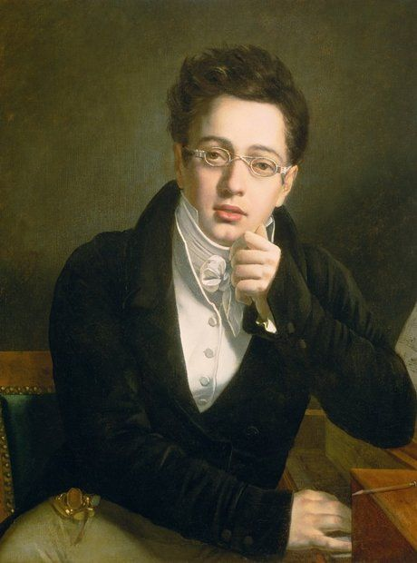

Schubert
Franz Schubert bol rakúsky skladateľ, ktorý je považovaný za jedného z najvýznamnejších predstaviteľov romantizmu a za zakladateľa moderného hudobného štýlu. Narodil sa 31. januára 1797 vo Viedni a aj keď mal krátky život (zomrel v roku 1828 vo veku 31 rokov), jeho dielo zahŕňa viac než 600 piesní, množstvo symfónií, komorných diel, klavírnych skladieb a sakrálnej hudby. Schubert bol predovšetkým známy svojimi pieseňami (Lieder), ktoré sa stali základom romantickej piesňovej tvorby. Jeho piesne, ako napríklad „Ave Maria“, „Erlkönig“ a „Die Forelle“, sú plné emotívneho vyjadrenia, jemnej melodiky a harmonických inovácií. Pieseň „Erlkönig“ je považovaná za majstrovské dielo v oblasti hudobnej dramatizácie textu. Jeho symfónie, ako „Symfónia č. 8“ (Nedokončená) a „Symfónia č. 9“ (Veľká), sú známe svojou krásnou melódiou a originálnymi formami. Schubert tiež skomponoval množstvo komorných diel, ako Kvartet Death and the Maiden a Klavírny kvintet Trout. Schubert sa stal majstrom v schopnosti vyjadriť jemné a komplexné emócie prostredníctvom hudby, pričom jeho skladby často balansujú medzi svetlom a tmou, optimizmom a melanchóliou. Aj keď jeho diela neboli počas jeho života vždy úplne ocenené, dnes sú považované za kľúčové v historickom vývoji klasickej hudby a jeho vplyv na ďalších skladateľov bol obrovský. Schubertova hudba je stále obľúbená a hrana na koncertných pódiách po celom svete.
Späť na hlavnú stránku